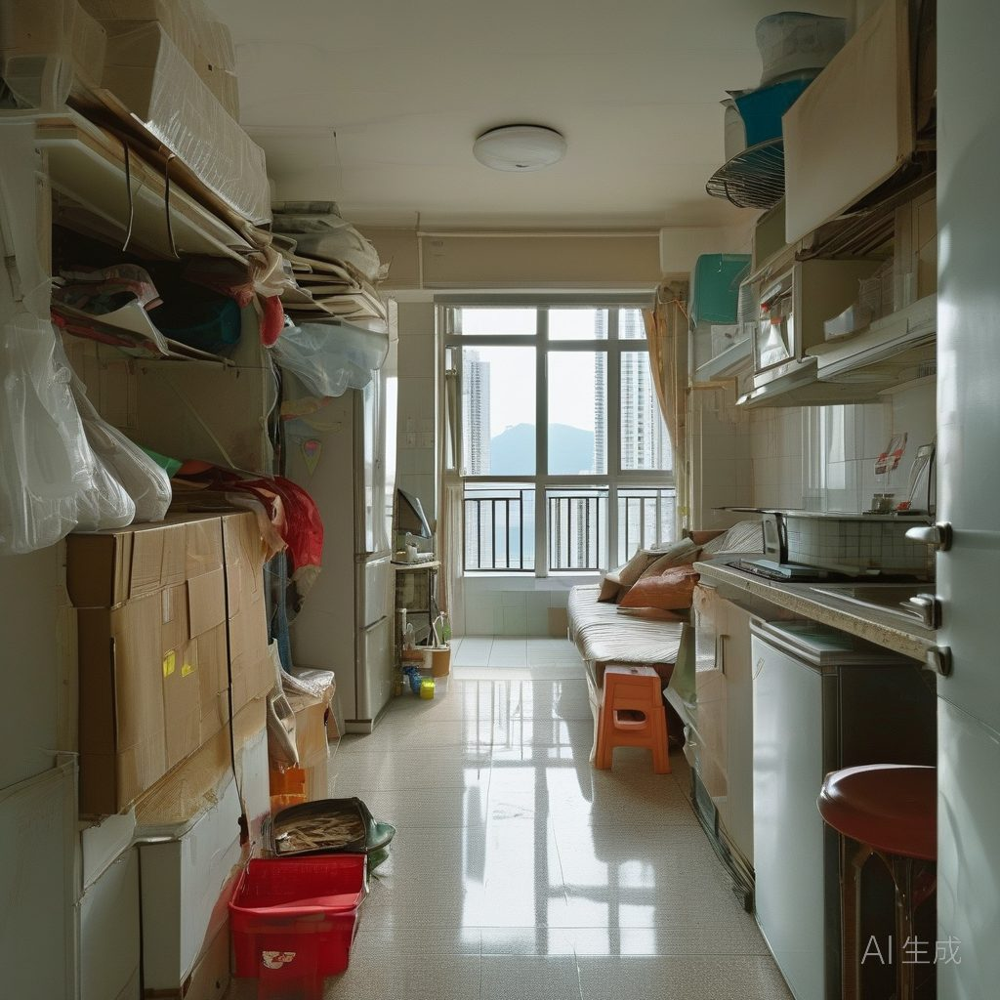
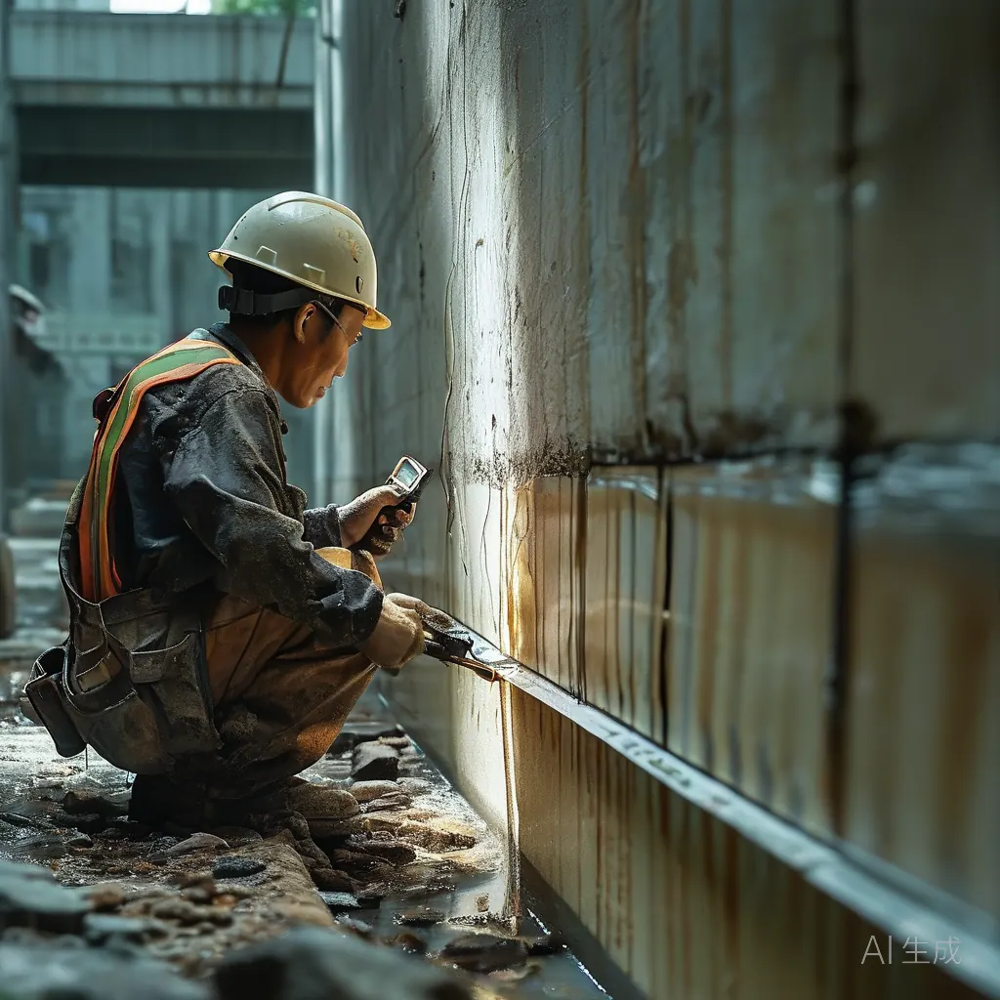
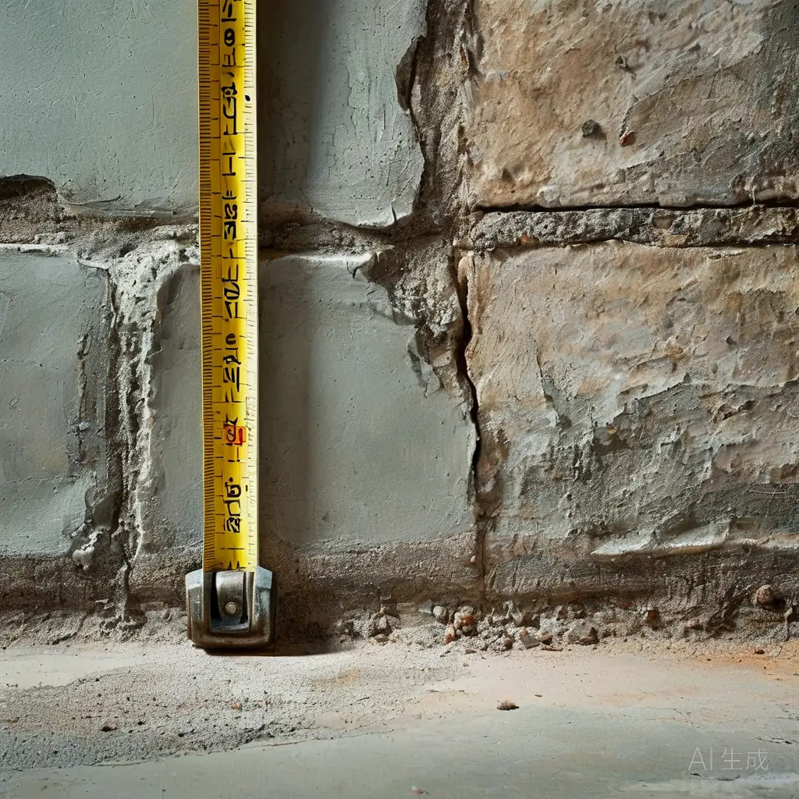
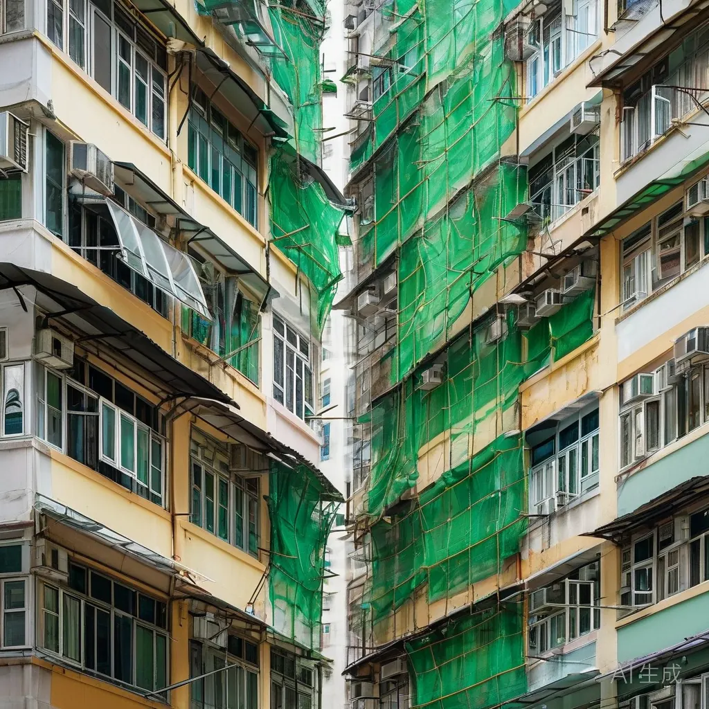
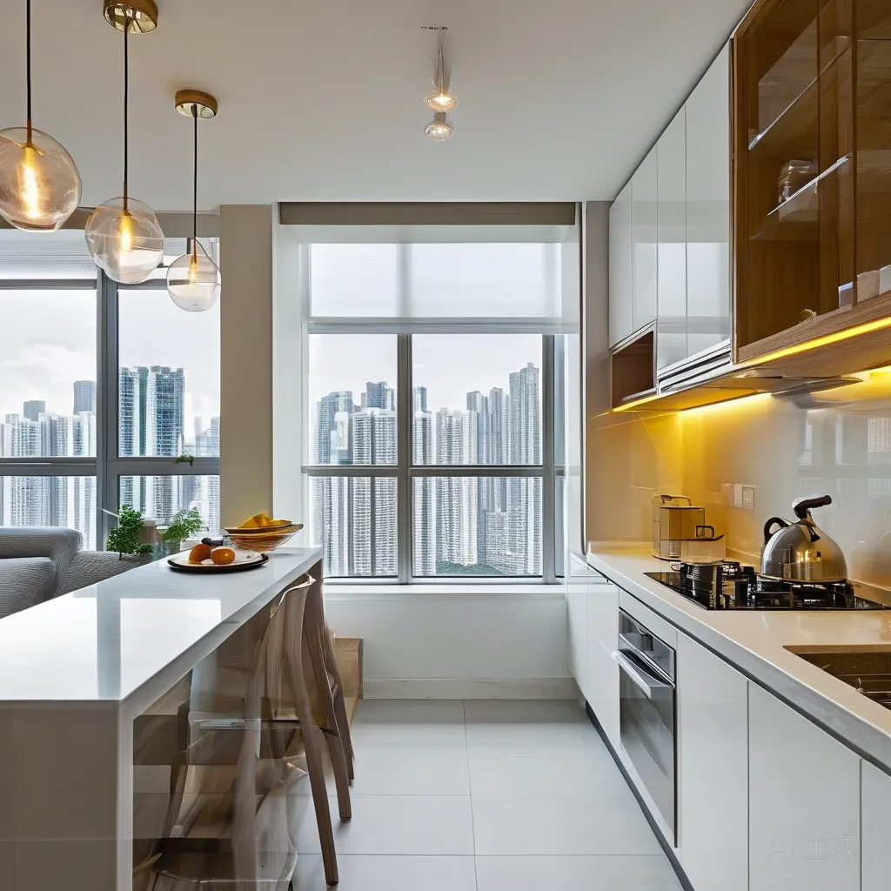

北角380呎拆牆改開放式廚房：輝哥同張丹楓講細工程最易出事

📍 場景：北角一幢四十幾年樓齡的住宅大廈，380呎兩房單位｜主訪：輝哥（三十一年裝修經驗）｜記錄：張丹楓｜整理：雲蕾｜日期：2026年11月18日｜WhatsApp 報價：852 5190 2328
序幕：一句「兩日搞定」，換來師傅面色一沉
十一月十八日下午，我同雲蕾去到北角這個380呎單位交收。業主阿俊兩夫婦上車半年，上手業主留低一套八十年代的木廚櫃，門板發霉，櫃底滲水痕跡一條條。
阿俊指住廚房同客廳之間那幅牆：「拆咗佢做開放式，兩日搞定啦，我跟住就可以搬入嚟。」
輝哥蹲低，用電筒照牆腳，再敲了兩下，無出聲。佢做裝修三十一年，觀塘、土瓜灣、北角這類舊樓，做過幾百個單位。佢站起身，只講一句：「呢幅牆拆之前，我想同你睇樣嘢。」
第一幕：政府今日公布的那組數字，講的正是「兩日搞定」
就在今日立法會的答覆裡，政府公布了一組值得每個準備裝修的業主記住的數字：二○一八至二○二六年（截至十一月四日）八年間，建造業共發生162宗致命工業意外，其中43宗涉及工期少於六星期或僱用不超過十名工人的建築工程。另外，二○二一至二○二六年五年間，涉及裝修及維修工程的致命工業意外共53宗，而其中只有24宗、即約45%，在意外發生前曾經向勞工處呈報過。
我把這段新聞讀給阿俊聽，佢第一個反應是：「咁同我拆幅牆有咩關係？」
「關係大。你估出事嘅係唔係那些幾十層樓嘅大工地？唔係。大工地有人管，有安全主任，有圍板有登記。出事最多嘅，係你講嘅『兩日搞定』——工期短、人少、無圖則、無呈報，連業主自己都覺得係小事。」
「但我只係拆一幅牆，唔係起樓。」
「162宗裡面有43宗就係你講嘅『細細粒』工程。細唔等於安全，細等於無人看住。拆牆會塌，鑿地台會爆水管，換窗要吊棚——吊棚係香港裝修最危險嘅工序之一，唔關大細事，關你吊幾高、綁得實唔實。」
雲蕾在旁邊補一句：「仲有，新聞寫得好清楚，意外之前有呈報嘅只係約四成半。即係話超過一半嘅裝修維修意外，係在無人知、無紀錄嘅情況下發生。」

第二幕：拆牆之前，三樣東西比錘仔重要
輝哥由工具箱拿出一把捲尺，量牆厚：「你睇，呢幅牆100毫米，兩邊批盪，中間係磚。另外一幅，即係你睡房同客廳之間那幅，200毫米，入面有鋼筋。」100毫米同200毫米，就係香港舊樓最實用嘅分辨方法之一——一般100毫米多數係後加嘅間隔牆，200毫米連鋼筋就有機會係結構牆。當然，最穩陣係睇圖則。
「咁如果上手業主留低嘅圖則唔見了呢？」
「去屋宇署查。舊樓一定有紀錄圖，業主可以申請副本。唔想查都可以，但你要接受一個後果：你拆嘅可能係主力牆，樓上樓下嘅受力會變，之後屋宇署叫你還原，你唔止要付拆嘅錢，仲要付修復嘅錢。」
第二樣東西係廚房嘅煤氣與煙道。阿俊想連煤氣煮食爐一齊移位，做一個中島。輝哥即刻截住：「煤氣喉唔係我哋可以隨便改。改煤氣喉要註冊氣體工程承辦商做，做完要出證明，你日後賣樓、保險都會問你攞。」至於煙道，舊樓廚房多數有共用煙道，胡亂改位會令樓上樓下抽油煙倒灌，呢個問題入住三個月後才會發現，到時要拆櫃重做。
第三樣東西，係一塊板。輝哥敲了敲阿俊想保留嘅舊櫃：「呢啲八十年代嘅夾板，表面睇仲實淨，其實背板已經發黑。你想省錢保留櫃體、只換門板，可以，但櫃背一定要拆開睇，見到發黑就要換。訂造新櫃我就用18毫米防潮夾板做櫃身，背板9毫米，吊櫃用兩條38毫米C字鋼鎖入牆身，每隻吊櫃至少要食得住30公斤。」
「30公斤即係幾多？」
「大約等於你放滿一櫃碗碟，再加大半箱罐頭。所以吊櫃唔可以只鎖石膏板，一定要鎖到實心牆或者龍骨位。呢個係裝修師傅嘅基本功，但偏偏最多人省。」

第三幕：換窗那日，樓下要貼通告
阿俊單位嘅廚房窗外係後巷，兩扇舊鐵窗已經銹到開唔順。換窗要搭懸空式竹棚，行內叫吊棚。輝哥講，呢一環今年規矩變了，業主最好自己知。
政府今日嘅答覆提到幾件事：勞工處二○二四年更新《竹棚架工作安全守則》，要求做吊棚工作嘅工人必須持有建造業議會發出嘅有效證明書；物業管理業監管局亦修訂了《處理棚架工作》操守守則，列明搭建吊棚前最少五個工作天要通報勞工處；勞工處今年二月六日推出網上通報平台，物管人員可以經網站或「職安健2.0」應用程式遞交表格。通報數字由二○二二年嘅1,576宗，升到今年截至十月底嘅19,876宗，預計全年接近24,000宗，係四年前嘅十五倍。
「即係話，如果管理處同你講『唔知要通報』，你就應該問清楚。」
「係。你搭棚之前，問師傅三條問題：第一，你班伙記有無建造業議會嘅棚架證明書？第二，我哋管理處有無在五個工作天前通報勞工處？第三，棚架邊個簽紙驗收？三條答得齊，你先好讓佢開工。答唔齊，唔係佢唔專業，係你唔應該博。」
輝哥亦提到，通報數字升十五倍，並唔係因為工程多了十五倍，而係因為以前根本無人報。「以前一幢樓十幾戶一齊換窗，個個都覺得係小事。現在有平台、有守則，報嘅人多了，巡查才捉得到違規。」對業主來說，這其實係好事：有人看著，師傅做事自然規矩。

尾聲：最貴的從來不是那三千元
最後我們坐低計數。380呎單位，拆一幅100毫米間隔牆、重做開放式廚房、訂造一組L形廚櫃加一個中島、全屋三組到頂衣櫃、換兩扇窗，連工包料落在 $35,000 至 $38,000 之間（故事報價，實際以度尺為準）。阿俊原本嘅預算係兩萬八，差額主要落在三處：拆牆後嘅結構修補、煤氣改位嘅註冊承辦商費用、以及吊棚嘅搭拆同保險。
「即係我要多付七千蚊，就係為咗『安全』兩個字。」
「唔係為兩個字，係為一條命。你多付七千，係買一個有牌嘅棚、一張有登記嘅呈報、一個肯同你講『呢幅牆唔拆得』嘅師傅。你省咗七千，可能省咗一次意外；但意外真係嚟嘅時候，你唔會記得省了幾多。」
收工嘅時候，天已經黑。阿俊站在廚房門口看了很久，最後同我講：「我原本以為裝修最難係揀顏色。」我話，顏色可以改，牆拆錯就改唔返。

❓ 拆牆改開放式廚房三問
Q1：怎麼分辨一幅牆可不可以拆？
先量厚度：舊樓100毫米多數係後加嘅間隔牆，200毫米連鋼筋就有機會係結構牆。再睇位置：外牆、樓梯邊、升降機槽邊一律不可動。最穩陣係去屋宇署查單位圖則，或請認可人士現場判斷。拆除涉及結構嘅牆，屬違反《建築物條例》，屋宇署可發清拆令要求還原，最高罰款20萬元。
Q2：細工程真的比大工程危險嗎？
政府今日公布嘅數字係：八年162宗建造業致命意外中，43宗涉及工期少於六星期或少於十名工人嘅工程。近五年53宗涉裝修維修嘅致命意外，只有約45%在事前向勞工處呈報過。細工程人少、期短、無安全主任，靠嘅係師傅自己嘅警覺，所以更要問清楚資格。
Q3：搭吊棚換窗，業主要做什麼？
要求物管在搭建前最少五個工作天通報勞工處（可經網上平台或「職安健2.0」應用程式）；要求搭棚工人出示建造業議會發出嘅有效證明書；確認棚架有安全網、有簽紙驗收。三樣齊全，才好讓師傅開工。
本文配圖均為 AI 場景示意圖，僅供場景參考，並非真實工地照片或業主影像。
想知你個單位裝修要幾錢？
📱 一鍵 WhatsApp 張丹楓